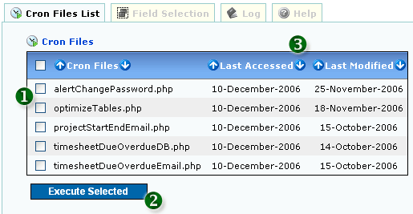

<table class="no-border" cellpadding=3 cellspacing=3>
<tr><td>
	<H1>1. List Cron Files</H1>
	<pre align="left">     
	<strong>Figure 1: List Cron Files</strong></pre>
	<ol>
		<li><strong>1. SELECT CRON FILES TO EXECUTE</strong></li>
		<li><strong>2. EXECUTE CRON FILES</strong></li>
		<li><strong>3. SORTABLE FIELDS</strong></li>
	</ol>
</td></tr>
</table>